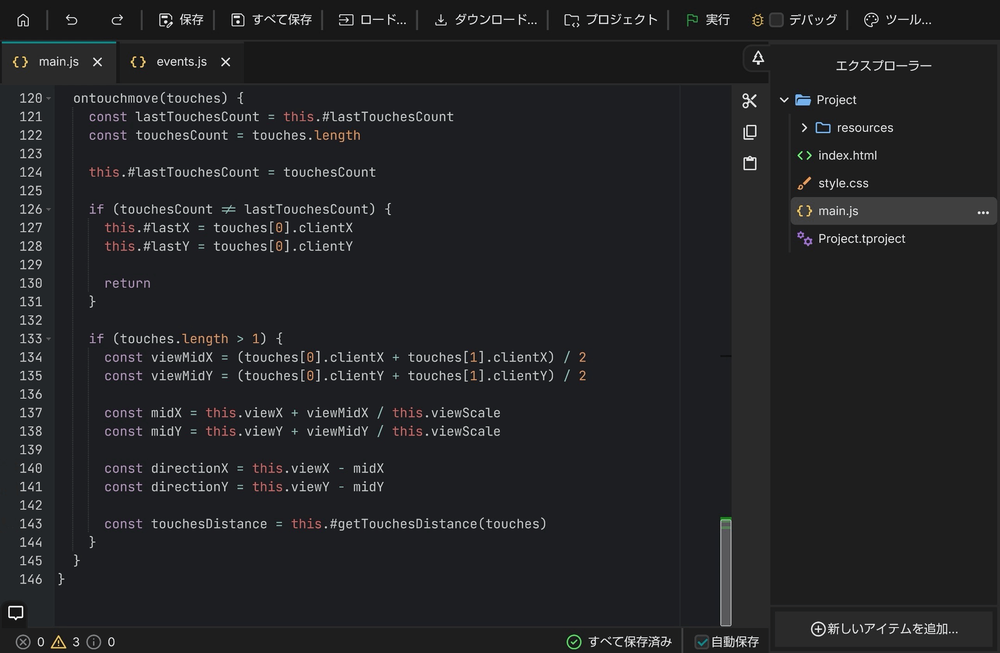

Takaon Editor
ソースファイルを自由に編集し、
JavaScriptをブラウザ環境ですぐに実行。
JavaScriptをブラウザ環境ですぐに実行。
Takaon Chart
シンプルなフローチャート作成ツール
保存URLの作成やSVG書き出しで、すぐに共有。
保存URLの作成やSVG書き出しで、すぐに共有。
Takaon Editor
ブラウザ上でHTML•CSS•JavaScriptコードを書き、
実際にページを起動することができるWebエディタです。
高性能なブラウザベースのコードエディタAceを組み込んでいるため、
パワフルな編集機能を使用できます。
Webページを実行する仕組み
ソースコードやファイルをブラウザ側で一時的なURLに変換して、
オフラインで開きます。そのため、画像ファイルなどを
実際のWebページと同じ記法で扱うことが可能です。
完成したページをそのままサーバにアップロードすれば、
ページを公開できます。